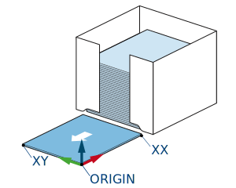

Every station has a user frame associated with it and the taught path are relative to that user frame. User frames are taught using the Smart Pendant normal interface which is accessible by pressing the 'Gear' icon next to the 'User Frame' selection box.
For proper operation, the fixed pick dispenser station user frame should be taught on the surface where the separator will be (under of the separator), in one of its corner (preferably a corner that doesn't move if the separator size changes). The X-axis and Y-axis should be taught along the two separator sides so that the Z-axis is point upward according to the right-hand rule.

For teaching, make sure that you have the correct tool # selected to represent the location on the tool used to teach. If it is difficult to reach the proper location, you can put a box in user frame location and teach on top of the box. Then after completing teaching, substract the height of the box from the user frame Z value.